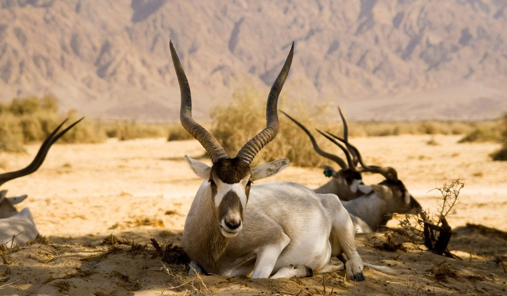
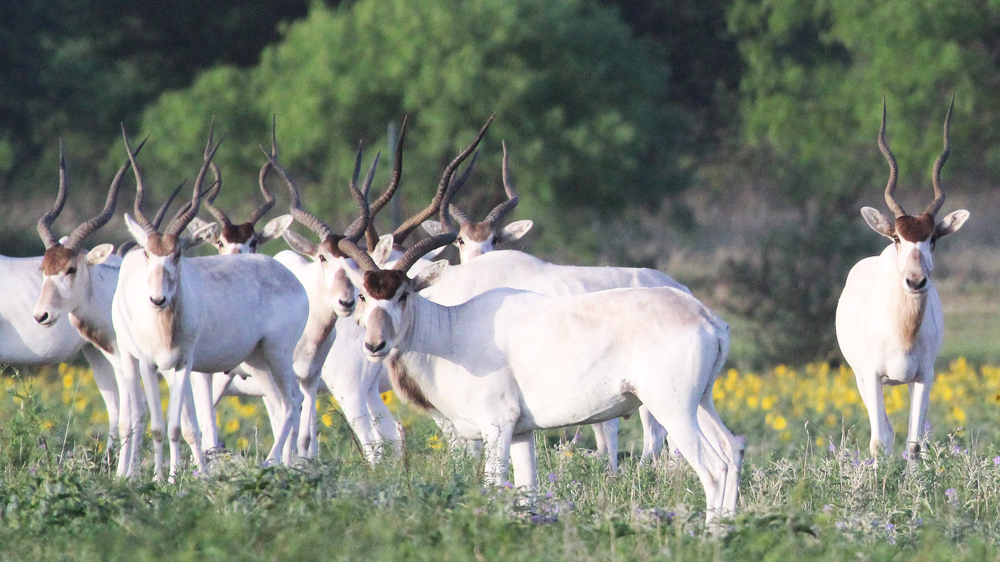
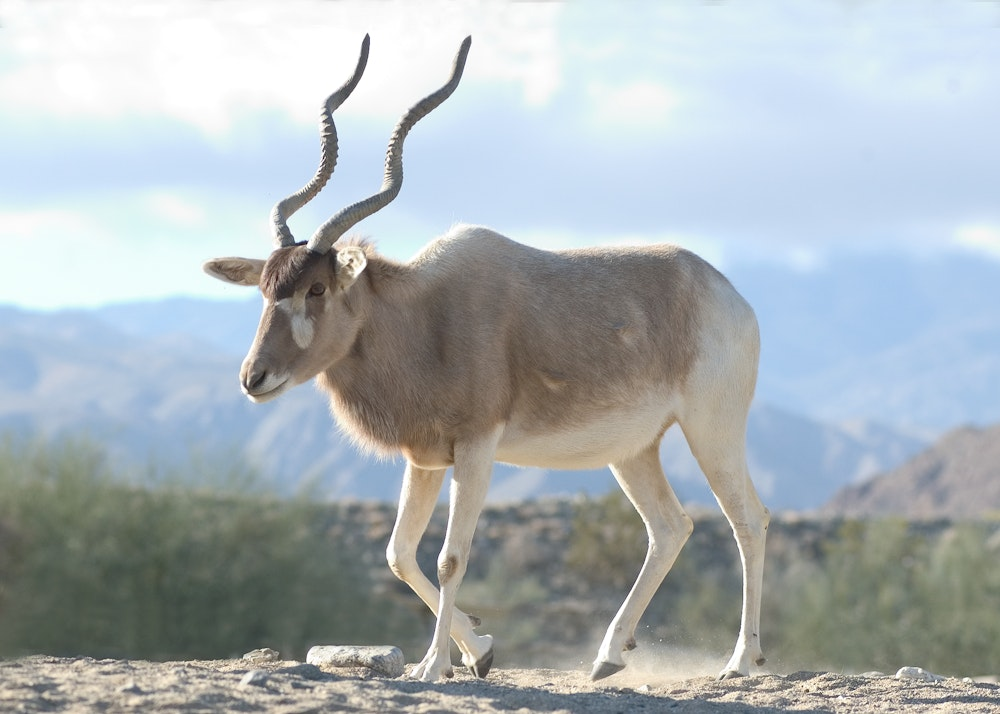
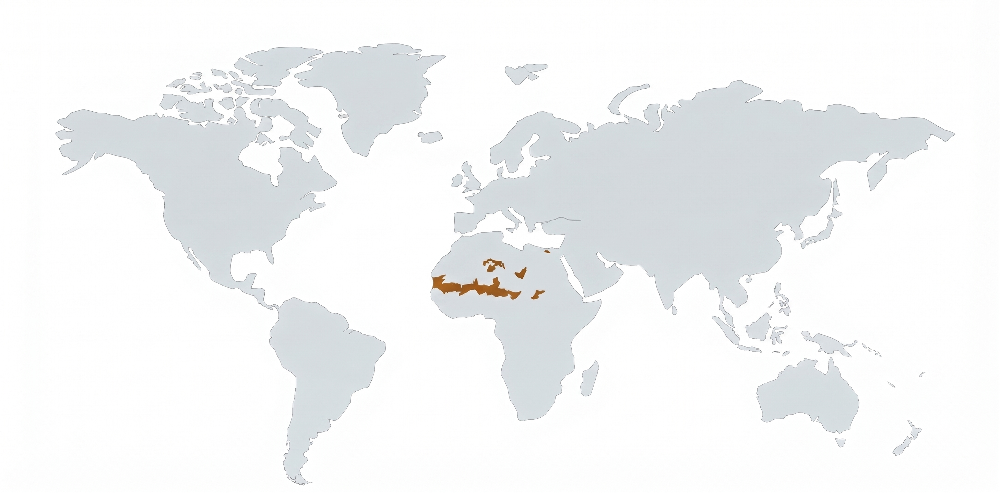

Adax
Addax nasomaculatus
O adax (Addax nasomaculatus), também conhecido como antílope-de-chifres-em-saca-rolhas, é um dos mamíferos mais emblemáticos e perfeitamente adaptados aos ambientes áridos e extremos do deserto do Sara. Distingue-se de imediato pela sua impressionante pelagem que varia entre o tom acastanhado ou cinzento no inverno e um branco-amarelado quase brilhante no verão — o que ajuda a refletir a luz solar intensa —, além de possuir uma distinta mancha escura em forma de "X" na testa e longos e finos chifres espiralados presentes em ambos os sexos. Dotado de cascos largos e espalmados que funcionam como raquetes naturais, este animal consegue caminhar com facilidade sobre a areia fofa das dunas sem afundar.
Habitat Natural

O adax habita exclusivamente regiões desérticas e semi-desérticas remotas, dunas de areia profunda e planícies pedregosas áridas do norte de África. Sendo um dos animais mais especializados na sobrevivência em ambientes áridos, é capaz de suportar condições extremas de calor e seca sem acesso a água superficial, obtendo toda a humidade de que necessita a partir do orvalho matinal e da vegetação suculenta que consome. Movimenta-se habitualmente em pequenos grupos familiares nómadas, procurando constantemente áreas onde ocorram chuvas esporádicas e o crescimento de novas ervas.
Dieta
O adax é um herbívoro ruminante de dieta estritamente seletiva e altamente adaptada à escassez do deserto. A sua alimentação diária é composta essencialmente por relvas rasteiras resistentes, rebentos secos, arbustos espinhosos do deserto, raízes subterrâneas e folhagem suculenta. Graças ao seu metabolismo extremamente eficiente e à capacidade de concentrar a urina para reter líquidos, consegue sobreviver com quantidades mínimas de água, alimentando-se principalmente durante as horas mais frescas da noite e do amanhecer para evitar o calor escaldante.
Curiosidades
- O adax é uma das espécies de grandes mamíferos mais criticamente ameaçadas do planeta, tendo a sua população selvagem sido dizimada pela caça excessiva e pela perda de habitat no deserto.
- Os seus chifres longos e graciosamente espiralados podem atingir mais de um metro de comprimento nos machos, conferindo-lhe uma silhueta inconfundível contra a paisagem arenosa.
- Possuem uma pelagem de inverno mais densa e escura que os protege contra as noites geladas do deserto, mudando para uma pelagem clara e refletora quando chega o verão.
Os nossos Adaxes
No Zoo Jonçela, um pequeno e resistente grupo de adaxes — encabeçado pelo majestoso macho Sahara e acompanhado pelas fêmeas Duna e Zahara — destaca-se na zona árida do parque. Com 6 anos de idade, o Sahara ostenta chifres espiralados perfeitos com 95 centímetros de comprimento, medindo cerca de 1,6 metros de corpo e pesando perto de 125 kg. A Duna e a Zahara, com 4 e 5 anos, apresentam uma compleição ligeiramente mais esguia, pesando cerca de 85 kg cada. O grupo partilha um amplo habitat arenoso e rochoso que simula as condições do seu ambiente natural, demonstrando uma notável calma e resistência.